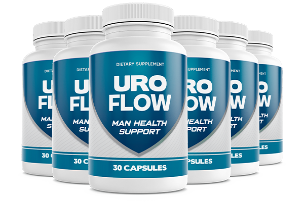

What Is UroFlow And How Does It Work?
Most men over 40 know the routine. You fall asleep at eleven, and by one in the morning the bladder pulls you out of bed. You stand there, waiting. A weak trickle. Back to bed. Two hours later, the same thing.
Doctors call it an enlarged prostate. The men living with it call it exhausting.
What most people never hear is the mechanism behind it — what some researchers refer to as the slow squeeze. As the prostate gradually swells with age, it presses against the urethra like a foot stepping on a garden hose. The water does not stop entirely, but the steady stream becomes a weak, frustrating trickle. Night after night, trip after trip, the squeeze tightens.
UroFlow is a daily capsule built to target the slow squeeze at its source. Instead of masking symptoms or forcing the body into a chemical override, the formula combines nine plant-based extracts and targeted nutrients that address prostate swelling, urinary flow, and the oxidative stress that accelerates the problem. One capsule a day, taken consistently, and the goal is straightforward: take the foot off the hose.
This is not a product that promises overnight results. UroFlow works with the body’s own biology, and the manufacturer recommends at least 90 days of consistent use to experience the full range of benefits. Men who stick with it report stronger flow, fewer night trips, and a kind of daily confidence they had stopped expecting to feel again.
UroFlow Ingredients
The nine ingredients inside UroFlow are not random picks from a supplement catalog. Each one targets a specific part of the slow squeeze — the swelling, the weakened flow, or the cellular damage that lets the problem worsen year after year.
- Saw Palmetto Extract: The anchor of the formula. Saw Palmetto has one of the longest research histories in prostate health, with documented effects on urinary flow and nighttime frequency. It targets the hormonal triggers behind prostate swelling directly.
- Pygeum Africanum Extract: A bark extract with clinical backing dating to a landmark study in The Prostate journal. Pygeum addresses bladder tone and urinary comfort, particularly in men dealing with incomplete emptying and persistent urgency.
- Pumpkin Seed Extract: Featured in a 2015 World Journal of Urology study for its measurable impact on urinary function in men with enlarged prostates. Pumpkin seed supports the muscles around the bladder and urethra, reinforcing the structural side of healthy flow.
- Nettle Root (Urtica dioica): Works alongside Saw Palmetto to address the hormonal environment that drives prostate growth. Nettle root pulls its weight specifically on frequency and urgency — the two symptoms that fragment sleep.
- Grape Seed Extract: A concentrated antioxidant that targets oxidative stress in prostate tissue. Cellular damage from free radicals is one of the accelerators of the slow squeeze, and Grape Seed Extract acts as a shield at that level.
- Lycopene: The same carotenoid responsible for the red in tomatoes, studied extensively for its affinity to prostate cells. Lycopene accumulates in prostate tissue at higher concentrations than almost anywhere else in the body, providing targeted antioxidant protection.
- Boron: A trace mineral that quietly supports hormonal balance and healthy inflammatory response. Small in dose, significant in its contribution to maintaining a prostate environment that resists further swelling.
- Vitamin E: An antioxidant that supports healthy circulation — particularly important for a gland whose function depends on blood flow. Vitamin E complements the antioxidant work of Grape Seed and Lycopene from a different biochemical angle.
- Vitamin B6: Supports the metabolic processes that keep energy levels stable and the nervous system responsive. For men whose broken sleep has left them dragging through the day, B6 addresses the fatigue side of the equation.
What stands out about the UroFlow blend is that it works on three fronts simultaneously: hormonal balance, structural support, and antioxidant defense. No single ingredient carries the formula alone — the value is in how they reinforce each other.
UroFlow Side Effects
The ingredients in UroFlow are plant extracts, vitamins, and trace minerals — nutrients the body already recognizes and uses. This is not a pharmaceutical compound that forces a system into a different gear. It is a formula that supports what the body is already trying to do.
UroFlow is manufactured in an FDA-registered facility that follows strict GMP guidelines, using both foreign and domestic ingredients under quality controls that ensure consistency from batch to batch. The product is non-GMO and free from harsh stimulants or synthetic fillers.
Among the growing number of men using the formula, there are no widespread reports of adverse reactions when taken as directed. The nutrient profile — Saw Palmetto, Pygeum, Pumpkin Seed, Nettle Root, vitamins, and antioxidants — is well-established in the daily supplement space, with each ingredient backed by documented safety data.
As with any dietary supplement, anyone with an existing medical condition or currently taking prescription medication should consult a healthcare professional before starting.
UroFlow Dosage
One capsule. Once a day. That is the entire protocol.
Each bottle of UroFlow contains 30 capsules — a full 30-day supply. Most users take it in the morning with water, making it part of the same routine as breakfast. No complicated schedule, no multiple doses spread across the day, no timing around meals.
The simplicity matters because consistency is what drives results. The manufacturer recommends using UroFlow daily for a minimum of 90 days to allow the ingredients to build up and deliver their full effect on prostate health and urinary function. Men who purchase a three or six-month supply tend to see the most noticeable changes, simply because they stay consistent long enough for the formula to do its work.
For those interested in longer-term use, multi-bottle packages are available with reduced pricing and free shipping — a practical option for men who plan to make UroFlow part of their ongoing routine.
Do not exceed the recommended dosage. One capsule daily is the amount formulated to deliver optimal support without overloading the system.
UroFlow – Refund Policy
Every order of UroFlow is covered by a 90-day money-back guarantee. That is three full months to use the product, evaluate how your body responds, and decide whether it is right for you.
The guarantee exists because the team behind UroFlow knows what the research timeline looks like. They recommend 90 days of consistent use for the best results — and they back that recommendation by covering the entire window with a full refund if the product does not meet your expectations.
For complete terms and conditions on the refund process, visit the official UroFlow website directly.
UroFlow Customer Reviews
“I had gotten to a point where I was up six, sometimes seven times a night. My wife would hear me shuffling to the bathroom again and she stopped saying anything — I think she just felt sorry for me. The worst part was standing there, waiting, and barely getting anything out. I was exhausted by nine in the morning. About three weeks into UroFlow, I noticed something. I only got up twice one night. Then once. Then there was a Saturday where I woke up and it was light outside. I sat on the edge of the bed trying to remember the last time that happened. My stream is stronger now than it has been in years. I actually feel rested when the alarm goes off.”
 David Henderson
Tampa, FL
Verified Purchase – 3 Bottles
David Henderson
Tampa, FL
Verified Purchase – 3 Bottles
“Nobody talks about this part, but prostate problems wrecked more than my sleep. My energy disappeared. My confidence was gone. My wife and I had not been intimate in months because I was either too tired or too frustrated with my body to even try. I felt like I was letting her down every single day. A friend mentioned UroFlow and I figured I had nothing left to lose. After about five weeks, the night trips dropped from five to one. I started waking up feeling like I had actually slept. Then one evening my wife looked at me and said something I had not heard in a long time — she said it felt like she had her husband back. That one sentence meant more to me than any doctor visit ever has.”
“My urologist told me we were running out of options. Surgery was the next step, and I was terrified. I kept reading about the side effects and thinking about what life would look like on the other side of that. I was not ready. I found UroFlow online and decided to give it a real shot — took it every single morning for two straight months without skipping. Slowly, things started shifting. I could empty my bladder without standing there for five minutes. I stopped mapping every rest stop before a drive. I went to a ballgame with my son and did not think about the bathroom once the whole time. At my next appointment, my doctor noticed the improvement. Surgery is off the table for now. I cannot describe what that felt like.”
UroFlow – Where To Buy
UroFlow is not available through Amazon, eBay, Walmart, or any other third-party retailer. The manufacturer sells exclusively through the official website, and there is a practical reason for that.
Third-party platforms have a documented history of listing supplement bottles that look authentic but contain different formulations, expired batches, or outright counterfeits. With a product you are putting into your body every day, the risk is not worth the convenience. Purchasing from an unauthorized seller also means forfeiting the 90-day money-back guarantee and access to the company’s direct customer support.
Buying through the official channel ensures the product ships from the manufacturer’s own facility, sealed and stored correctly, with full guarantee coverage intact.
Before completing any order, verify that you are on the official UroFlow website to avoid unauthorized resellers.
To ensure you’re getting the authentic product, most users choose to visit the official website directly.
Is UroFlow A Scam?
Straight answer: no, UroFlow does not appear to be a scam.
The formula is built on nine ingredients with published research behind them, manufactured in an FDA-registered, GMP-certified facility in the United States. The 90-day guarantee covers the full recommended use period, which is not something companies do when they expect returns. And the reviews from verified buyers describe the kind of specific, gradual improvements that match a real product doing real work inside the body — not the overnight miracle claims you see from products that vanish in six months.
What UroFlow targets — the slow squeeze — is a well-understood physiological process, and the ingredients in this formula address it from multiple angles: hormonal balance, structural support, and antioxidant protection. That three-pronged approach is what separates it from the single-ingredient capsules that line pharmacy shelves and never quite deliver.
Is it for everyone? No. If you are looking for a product that fixes everything by tomorrow morning, this is not it. UroFlow works with consistency, and some men will respond faster than others. But the 90-day window gives you more than enough time to find out where you land.
Try it. If it does nothing for you, you send it back and you are out nothing but a few minutes of your time.
As with any supplement, consulting a healthcare professional is always a reasonable step if you have specific concerns about your individual situation.
For those who want to verify product details or check current availability, the official UroFlow website remains the safest and most reliable option.
